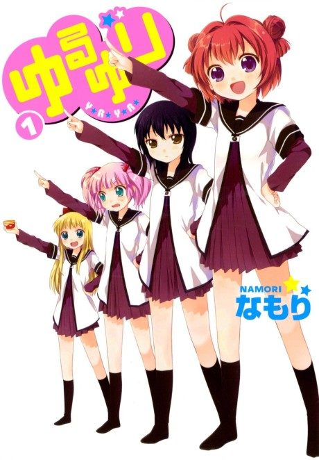

Manga continues fromCh. 99
Anime
Manga continues fromCh. 99
Anime
MangaYuruYuri
ゆるゆり
AniList7.3
Animeter—
3 seasons36 ep
MangaCh. 99
Anime finished. Where does the manga pick up?
Start at Chapter99
After all three seasons and the OVAs, the suggested starting point is chapter 99 (volume 14), though the anime skips many chapters and gags, so reading from chapter 1 is also suggested. The manga has been on hiatus since 2018.